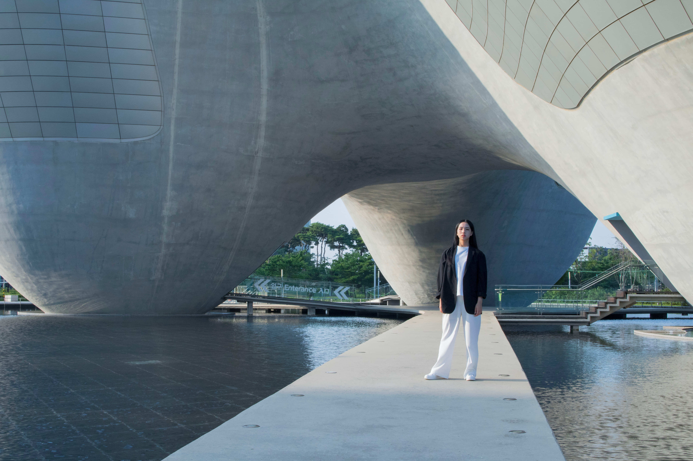
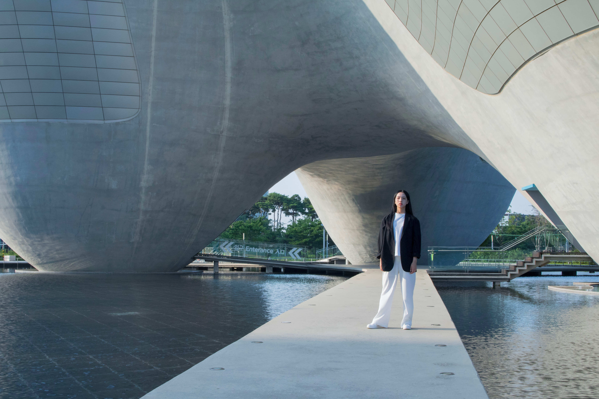

훨훨날아보자훨훨날아보자


Unexposed
다들 외출 중에 월경과 관련된 경험이 있어?
초경을 하고 나서 본격적인 월경 라이프가 시작됐다면, 살아생전 겪어보지 못한 순간들을 생각보다 많이 마주하게 될꺼야.
예정된 다음 월경일이 찾아오지 않아 불안한 상태로 길을 걷다가 바지에 피를 보게 되는 막막한 순간이란! 버스 의자에 앉아있다가 일어서는데 물컹한 무언가가 나와 심상치 않은 느낌을 주는 아찔한 순간이란! 그런 예상치 못한 경우들 때문에 당황했을 너희들을 위해 유용한 코디 팁을 알려줄까 해.
100%의 완연한 대처를 보장하진 않더라도 멘붕에 빠진 너희들을 빠르게 구출해줄꺼야!


밝은 색상의 하의를 입은 채로 외출하다가 월경혈이 세어나오면 제대로 걷지 못할 정도로 정말 신경쓰일꺼야. 그래서 예상 월경 주기 동안만큼은 어두운 색상에, 복잡한 문양을 갖고 있는 옷을 갖고 다니면 좋아. 계절에 따라 체크 무늬 남방이나 가디건은 허리에 둘러 혈이 센 부분을 가리기에 좋아. 페이즐리 패턴처럼 단순하지 않은 패턴이 있는 반다나를 엉덩이쪽 벨트 고리에 걸어서 쓰면 난처하지 않게끔 꽤 요긴할꺼야. 간단한 포인트 역할도 해서 일석이조인 셈!
남색 체크 무늬와 나무로 된 단추의 색 대비가 매력인 체크 남방은 엠폴햄(Empolham).
검은 천과 대조되는 흰 페이즐리 패턴 반다나는 와일드브릭스(Wild bricks).
길이가 아예 엉덩이까지 덮이는 어두운 색상의 자켓도 도움이 될꺼야. 너희한테 딱 맞는 사이즈에, 엉덩이를 덮는 길이의 자켓이 없다면 두 치수 정도 크게 입는 것도 방법이야. 여기서 중요한 점은 어두운 색상이라고 꼭 검정색만 고집할 필요는 없다는 거! 남색, 고동색, 진녹색, 와인색 등 어두운 색상들은 다양하게 있으니까.

 

요철감이 있는 소재가 특징인 검정 블레이저 자켓은 무인양품(MUJI).


사실 월경 주기 때 짧은 치마보다는 활동하는데 더 편한 바지를 택하는 여자들이 많아. 치마를 입고 싶어도 월경 주기라 움직이는게 더 조심스럽고 혈이 셀 때 더 잘보일 것 같기 때문이지. 너희도 월경 라이프가 점차 익숙해질 즈음에는 월경 주기임에도 치마를 입고 싶다는 생각을 할 수도 있겠지? 그럴 때는 허벅지 중간까지 오는 길이의 원피스가 추천할께. 치마에 비해 허리 쪽에 불편함이 없을 뿐더러 무릎 바로 위까지의 길이는 애매하게 긴 길이이기 때문이지.
노란색 도트 무늬가 포인트인 남색 원피스는와이(Y).
플라이 니트 소재와 신개발된 에어 덕분에, 발의 피곤함을 주지않는 운동화는나이키 베이퍼맥스 퓨어플레티넘(Nike).